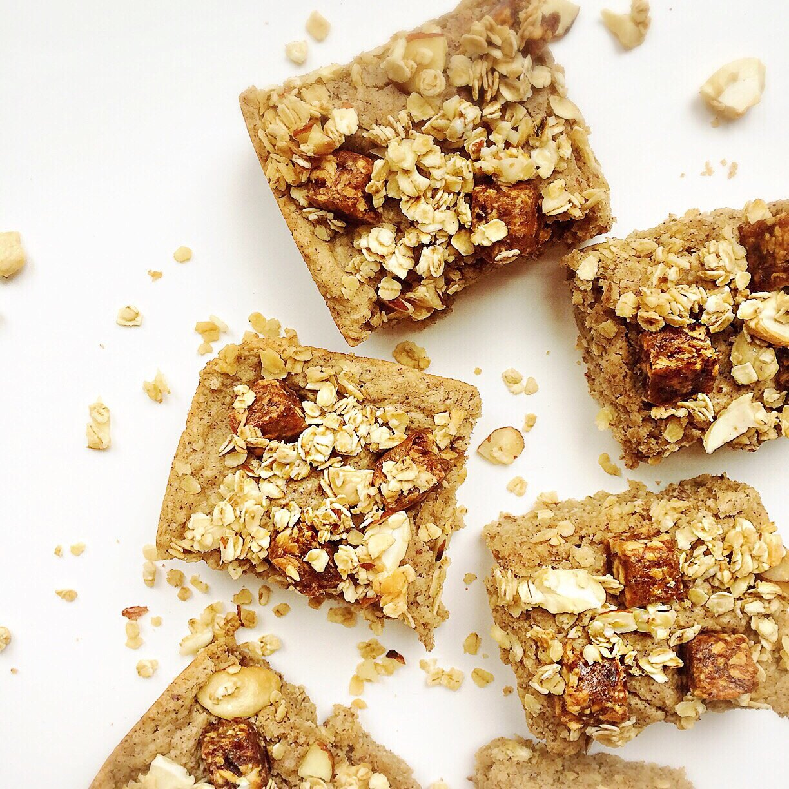
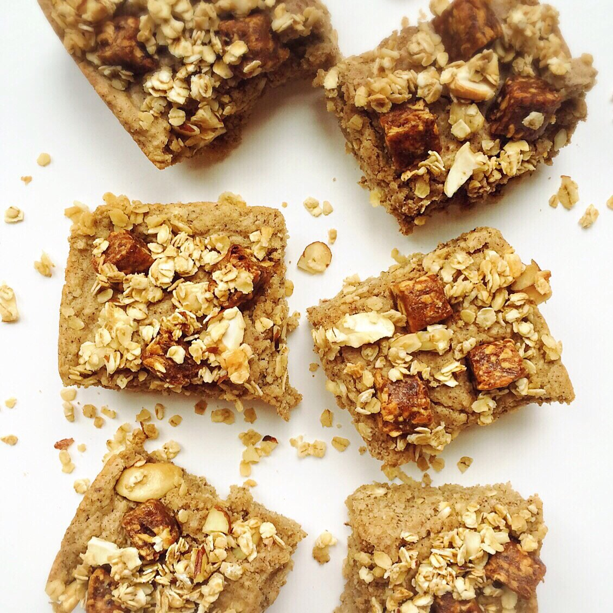

Zesty Fruit and Nut Crumble Bars (vegan, gluten free)


Sweet fruit amd nut cake with a granola crumble. With a cakey, dense base and a crispy, crunchy topping, the best of both worlds combine to make a perfect snack or dessert. These Zesty Fruit and Nut Crumble Bars are vegan, gluten free, and refined sugar free. They are also flourless and egg free!
By now I'm sure you've seen me mention the new That's it. Zesty. bars that have been released. Since I went vegan, I starting snacking on these bars a lot. They are just 2 ingredients (100% dried fruit: apple + another fruit), so they are simple and nutritious. The new "zesty" line adds in spices to mix things up! They have three different zesty flavors; I've shared awesome recipes using the apple cinnamon bar (Caramel Swirl Apple Cinnamon Cake) and the apple chili mango bar (Chili Mango Salad). But now I'm trying the Apple + Pear + Ginger bar!
I have to say, I really love all these bars because each one satisfies a different "flavor mood." Do I sound crazy? I hope you get me on this. Sweet mood? Apple cinnamon. Savory spicy mood? Apple chili mango. Kinda in the middle where you want sweet with a little kick? Apple Pear Ginger! I think since apple pear ginger is so "in the middle" it's my favorite of the three. It is the essence of zesty.
The addition of the fruit bar is my favorite aspect of this recipe. There are so many flavors going on, yet it combines perfectly. What all is going on, you ask? Well. The cake has cinnamon, apple, cashew. The topping has apple pear ginger, almonds, more cashews...So. That's how this recipe got its name! Fruits and nuts of all varieties!
This recipe is gluten free, vegan, and refined sugar free. It can be made fully sugar free with stevia. This healthy, flourless recipe makes for a perfect snack or dessert. Heck, even breakfast. Nobody's judging 'round here. Try these fruit and nut crumble bars and see for yourself why you'll want to eat it at every meal.
Zesty Fruit and Nut Crumble Bars
Makes: 8 cake bars
Cake Batter
-
1 cup raw oats
-
1 TBSP ground flax
-
1 scoop (12 g) vanilla pea protein (I used Nuzest brand)
-
1/4 cup baking stevia
-
2 tsp baking powder
-
1 tsp cinnamon
-
1/2 cup unsweetened almond milk
-
2 TBSP unsweetened applesauce
-
1/4 cup cashew butter (I use Crazy Richard's brand)
Topping Granola Crumble
-
1 Apple + Pear + Ginger That's it. Zesty. bar
-
1/4 cup raw oats (rolled prefered, but instant is fine)
-
1 TBSP slivered almonds, crushed
-
1 TBSP chopped cashews, crushed
-
1 TBSP maple syrup (or preferred sweetener)
-
Grind the oats into a flour. Then in a medium bowl, mix together the ground oats and the remaining cake batter ingredients. It'll be moderately thick, but if you feel it's too thick to blend, feel free to add 2-3 TBSP more almond milk.
-
Spray a 9x4 baking dish with nonstick spray and pour your batter in. Chop up the That's it. Zesty. bar into small pieces and sprinkle on top.
-
Make the granola crumble by mixing the rolled oats, almonds, cashews, and maple syrup. Sprinkle evenly on top of the cake batter.
-
Bake at 350 F for 22-25 mins. Let cool 10 minutes then cut into 8 pieces. Enjoy!
Nutrition Info for 1 cake bar: 136 calories; 6 g fat, 17 g carbs (2 g fiber, 5 g sugar), and 5 g protein